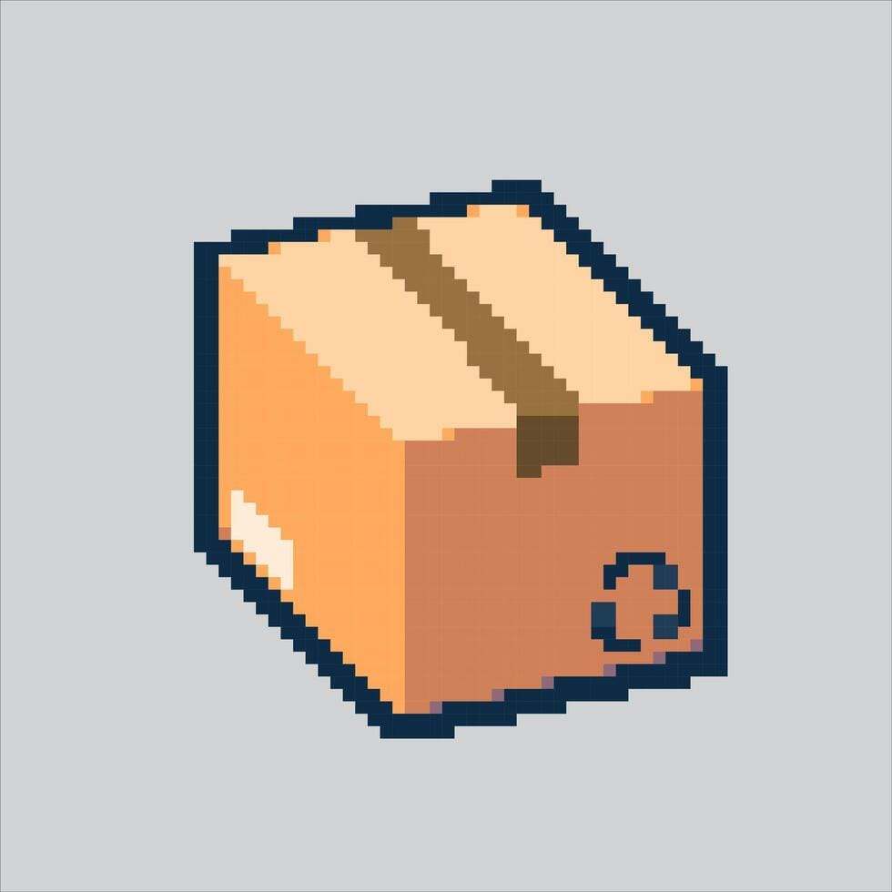

Cosmic Cache YIC
Welcome to Cosmic Cache YIC!
What would you like to do today?
Did you lose something important on campus? File a report here so others can help you find it.
Browse Lost Items
Did you find an item that belongs to someone else? Browse the database or post a new found item.
Browse Found Items